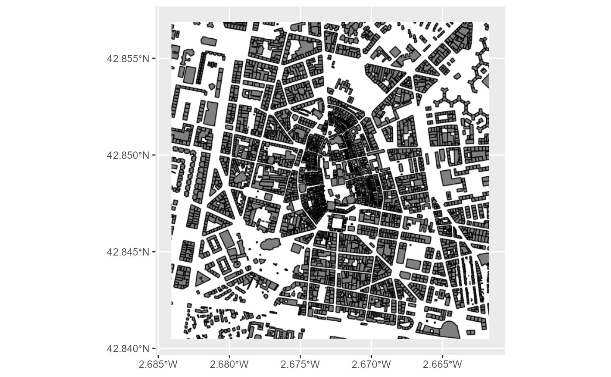
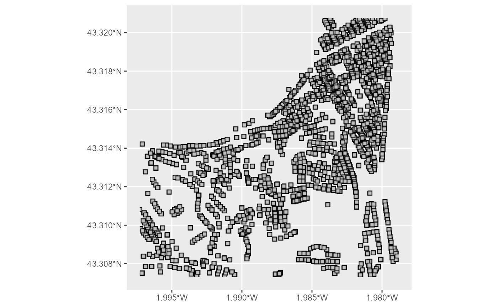

WMS INSPIRE: Retrieve Map Images from the Basque Country (Pais Vasco) Based on Bounding Box Coordinates
Source:R/wms_eus.R
catreus_wms_get_layer.RdFetches geotagged images from the Cadastre based on the provided bounding box coordinates. This function determines the province (Bizkaia, Gipuzkoa, or Araba/Álava) using reverse geocoding and fetches the appropriate data using specific WMS service functions for each province. It ensures the coordinates fall within a single province and handles different CRS inputs.
Arguments
- x
A numeric vector of bbox coordinates or an
sfobject defining the area to be covered.A numeric vector of length 4 with the coordinates defining the bounding box:
c(xmin, ymin, xmax, ymax).
- srs
The spatial reference system to be used, typically an EPSG code (3857 or 25830).
- what
Specifies the layer to be extracted. Options include:
For Bizkaia:
"parcel": CP.CadastralParcel"zoning": CP.CadastralZoning"address": AD.Address"admunit": AU.AdministrativeUnit
For Gipuzkoa:
"parcel": cp.CadastralParcel"zoning": cp.CadastralZoning"address": ad.Address"admunit": au.AdministrativeUnit"admbound": au.AdministrativeBoundary"building": bu.building"buother": bu.otherconstruction
For Araba:
"parcel": CP.CadastralParcel"admunit": AU.AdministrativeUnit"admbound": AU.AdministrativeBoundary"building": BU.Building
- id
An identifier for the custom WMS service configuration.
- styles
Specifies the style of the WMS layer, see Styles for options.
- verbose
Logical; if
TRUE, prints additional information about function operations. Useful for debugging. Default isFALSE.- crop
Logical; if
TRUE, the returned image will be cropped to the bbox. Default isFALSE.- options
List; additional options for the WMS request.
Value
Returns a SpatRaster object with either RGB or RGBA layers depending on the data.
Additionally, prints messages detailing the province detected and any potential issues with
the provided coordinates.
Details
This function uses reverse geocoding to determine the province within the Basque Country from the provided coordinates. Based on the identified province, it delegates the data fetching to specific functions handling each province's data. It supports flexible input types and handles geographical coordinate transformations internally if needed.
Styles
Various styles are available for each layer, which can enhance the visualization:
Bizkaia:
"parcel":"CP.CadastralParcel.BoundariesOnly","CP.CadastralParcel.ReferencePointOnly","CP.CadastralParcel.LabelOnReferencePoint","CP.CadastralParcel.Default","inspire_common:DEFAULT""zoning":"CP.CadastralZoning.Default","inspire_common:DEFAULT""address":"AD.Address.Default","inspire_common:DEFAULT""admunit":"AU.AdministrativeUnit.Default","inspire_common:DEFAULT"
Gipuzkoa:
"parcel":"CP.CadastralParcel.BoundariesOnly","CP.CadastralParcel.ReferencePointOnly","CP.CadastralParcel.LabelOnReferencePoint","CP.CadastralParcel.Default","CP.CadastralParcel.ELFCadastre""zoning":"CP.CadastralZoning.Default","CP.CadastralZoning.ELFCadastre""address":"AD.Address.Default","AD.Address.Number.ELFCadastre""admunit":"AU.AdministrativeUnit.Default","AU.AdministrativeUnit.ELFCadastre""admbound":"AU.AdministrativeBoundary.Default","AU.AdministrativeBoundary.ELFCadastre""building":"BU.Building.Default","BU.Building.ELFCadastre""buother":"BU.OtherConstruction.Default","BU.OtherConstruction.ELFCadastre"
Araba:
"parcel":"INSPIRE_CP:CP.CadastralParcel.Default","INSPIRE_CP:CP.CadastralParcel.ELFCadastre","INSPIRE_CP:CP.CadastralParcel.BoundariesOnly","INSPIRE_CP:CP.CadastralParcel.LabelOnReferencePoint","INSPIRE_CP:CP.CadastralParcel.ReferencePointOnly""admunit":"INSPIRE_AU:AU.AdministrativeUnit.Default""admbound":"INSPIRE_AU:AU.AdministrativeBoundary.Default""building":"INSPIRE_BU:BU.Building.Default"
See also
mapSpain::esp_getTiles(), mapSpain::esp_make_provider(), terra::RGB().
For advanced plotting, see terra::plotRGB() and tidyterra::geom_spatraster_rgb().
Examples
# \donttest{
library(mapSpain)
library(ggplot2)
library(terra)
#> terra 1.7.78
library(tidyterra)
#>
#> Attaching package: 'tidyterra'
#> The following object is masked from 'package:stats':
#>
#> filter
# Fetching a building layer using specific bounding box coordinates (Araba)
pic_bu <- catreus_wms_get_layer(c(-298730.238481,5288011.551711,-296360.690604,5289922.477418),
srs = 3857, what = "building", id = "layer_eus_1")
#> Passing 1 coordinate to the Nominatim single coordinate geocoder
#> Query completed in: 1 seconds
#> Passing 1 coordinate to the Nominatim single coordinate geocoder
#> Query completed in: 1 seconds
#> [1] "Coordinates of Araba/Álava:"
#> [1] "building"
# Displaying the fetched raster image
ggplot() + geom_spatraster_rgb(data = pic_bu)

# Fetching an address layer using specific bounding box coordinates (Gipuzkoa)
pic_ad <- catreus_wms_get_layer(c(-221868.029226,5358914.061417,-220750.137688,5360872.760267),
srs= 3857, what = "address", id = "layer_eus_2")
#> Passing 1 coordinate to the Nominatim single coordinate geocoder
#> Query completed in: 1 seconds
#> Passing 1 coordinate to the Nominatim single coordinate geocoder
#> Query completed in: 1 seconds
#> [1] "Coordinates of Gipuzkoa:"
#> [1] "address"
#> Warning: URL 'https://b5m.gipuzkoa.eus/inspire/wms/gipuzkoa_wms?request=GetMap&service=WMS&format=image/png&layers=ad.Address&styles=default&version=1.3.0&crs=EPSG:3857&bbox=-222337.40035325,5358865.09394575,-220280.76656075,5360921.72773825&width=512&height=512': status was 'Failure when receiving data from the peer'
#> Error in download.file(url = q, destfile = filename, mode = "wb", quiet = !verbose): download from 'https://b5m.gipuzkoa.eus/inspire/wms/gipuzkoa_wms?request=GetMap&service=WMS&format=image/png&layers=ad.Address&styles=default&version=1.3.0&crs=EPSG:3857&bbox=-222337.40035325,5358865.09394575,-220280.76656075,5360921.72773825&width=512&height=512' failed
# Displaying the fetched raster image
ggplot() + geom_spatraster_rgb(data = pic_ad)
#> Error in eval(expr, envir, enclos): object 'pic_ad' not found
# Fetching a zoning layer using specific bounding box coordinates (Bizkaia)
pic_zo <- catreus_wms_get_layer(c(-339724.372213,5356554.068169,-333915.158064,5361598.912035),
srs= 3857, what = "zoning", id = "layer_eus_3")
#> Passing 1 coordinate to the Nominatim single coordinate geocoder
#> Query completed in: 1 seconds
#> Passing 1 coordinate to the Nominatim single coordinate geocoder
#> Query completed in: 1 seconds
#> [1] "Coordinates of Bizkaia:"
#> [1] "zoning"
# Displaying the fetched raster image
ggplot() + geom_spatraster_rgb(data = pic_zo)

# }